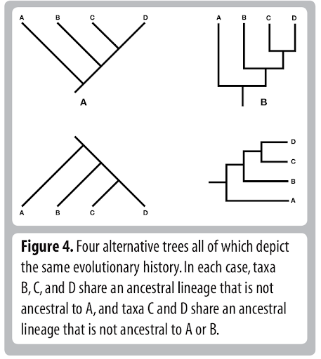
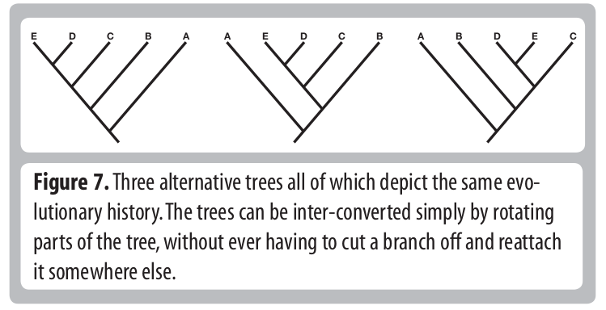

Fundamentals of Evolution
EEEB G6110
Session 3: Tree Thinking
Today's topics
1. Recap: Earth History
2. Homology and Phylogeny (Futuyma Chapter 2)
3. Tree-thinking and trees as tools
Measuring diversity
Jack Sepkoski spent 15 years compiling a database of animal diversity to compile his classic kinetic model diversity curve (Sepkoski curve).

Sepkoski 1978, A Kinetic Model of Phanerozoic Taxonomic Diversity I
The Geologic History of Diversity
Has diversity (the global number of species) increased through time?
- What does the evidence suggest?
- What biases exist in the data?
- Why should we expect diversity should or should increase over time?
Phylogenetic Classifications
Darwin (1859) drew a tree in the Origin of Species and described how it provides a useful analogy for thinking about descent from common ancestors.
Zimmerman (1931) and Hennig (1950) formalized quantitative methods for inferring phylogenetic relationships based on measured characters (cladistics).
This includes identifying
homologous characters (derived from a shared ancestor) and
synapomorphies (derived character states). Their methods were based on Occam's raxor (parsimony).
Homology
Central to all character analyses is the necessity to identify homology: characters that are derived from the same character in a shared ancestor.
Homology
It is sometimes very difficult to infer homology. Which structures of seed plants are homologous to flowers in angiosperms? Anatomical and developmental arguments over this clouded seed plant phylogeny for decaces when morphological characters were used to infer phylogeny.
Character Analysis
Homology: derived from a shared ancestral character.
Convergence: derived characters that look similar but evolved from different ancestral characters (non-homologous, e.g., wings of birds and insects).
Parallel evolution: similar derived character states which evolved independently from a homologous ancestral character. Often used as evidence of adaptation.
Dollo's law: complex characters, once lost, are unlikely to be regained. Not a great rule, more of a common pattern. Examples: eyes, teeth, aquatic larval stage. In general, not all traits are equally reversible in their evolution.
Character Analysis: not always that simple...
How to define independent characters? How to discretize quantitative characters?
How to define gains/losses:
Same function but different organ.
Same organ but different gene.
Same gene but different mutation.
Same mutation but different context.
Example: blue flowers evolve in two lineages:
Same mutations affect the same protein.
Different mutations affect the same protein.
Different mutations affect different proteins in same pathway.
Different loss-of-function mutations in same protein.
Homology in genetics
Homologous genes: the ancestor of these gene copies was present in a common ancestor. Two distinct copies (orthologs) arose by a speciation/divergence event.
Paralogous genes: the ancestor of these gene copies was present within a lineage (e.g., species). Two distinct copies (paralogs) arose by gene (or genome) duplication.

Homology in genetics: hemoglobin example
Character Analysis: definitions
Apomorphy (autapomorphy): uniquely derived in a single taxon.
Synapomorphy: shared derived.
Plesiomorphy: shared ancestral state.
Homoplasy: independent (parallel) evolution of a character in different taxa.
Coding characters
Discrete data: DNA is discrete, there are only four possible states (A,C,G,T). But what about body mass, height, color, etc.
Characters weighting: Is one trait more informative than another? How to avoid biased sampling of characters?
Why not only use DNA?: For phylogenetics of extant taxa we mostly do. But morphology is still very relevant to phylogeny of extinct taxa (e.g., dinosaurs) and placing fossils with extant taxa
DNA (nucleotides) as characters
heritable: DNA and amino acid differences are heritable, not plastic.
homology: can be inferred by comparing sequences using alignment algorithms. The spatial location of nucleotides in the genome provides evidence of its homology.
models: informed evolutionary models can be used to estimate rates of character change (e.g., random or non-random rates).
availability and bias: Huge amounts of data are available and there is no inherent bias or expectation that certain parts of the genome (characters) should support one hypothesis more than another.
Tree Thinking
Essential to all fields of biology.
Simple but commonly done incorrectly.
Common pitfalls:
- describing taxa as being "basal".
- misinterpreting node rotations as meaningful.
- misinterpreting relationships.
- misinterpreting branch lengths.
- misinterpreting rooting of tree.
- failing to read figure captions when present.
Tree Thinking
Tree Thinking
But what is a tree?
A data structure (e.g., objects and pointers), that can be used in quantitative analyses.
But what is a tree?
It can be an image, but can also be stored as text (data). The newick format stores phylogenetic trees as nested parentheses.
In class exercise
You can access these slides at: https://eaton-lab.org/slides/fundamentals/
Interactive coding exercises with trees: https://mybinder.org/v2/gh/genomics-course/f3-tree-thinking.git/master?filepath=notebooks
Reading for next week
- Futuyma Evolution Textbook (Chapters 16)